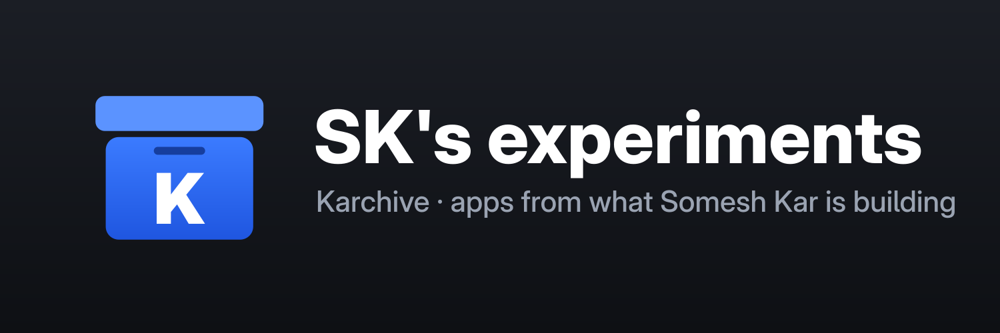

Apps from Somesh Kar's experiments that happen to need an iPhone or iPad. Built unsigned; SideStore or LiveContainer signs them on your device.
livecontainer://sources?url=https%3A%2F%2Fsomeshkar.github.io%2Fkarchive%2F950955e87ce8818d61e7c6826276745c%2Fsource.json in Safari.https://someshkar.github.io/karchive/950955e87ce8818d61e7c6826276745c/source.json